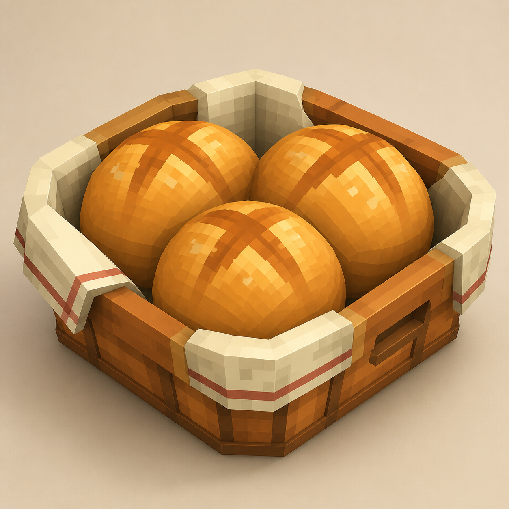

Day 8 — Week 2: Texturing & Polish
08Bread basket — inflate & deflate
Yesterday you controlled where a texture lands with UV mapping. Today you learn a small shape-polish control: Inflate. Build a bread basket, then use tiny Inflate and Deflate values to make chunky pieces overlap cleanly without flickering.
One bread basket render: a shallow wooden crate-basket, a cream cloth liner, and three warm bread rolls. The new skill is using Inflate / Deflate as controlled shape polish, not just resizing cubes bigger and smaller.
Warm up — 30-second recall
Answer first, then open the cards. Today reuses old skills but adds one new control.
What does UV mapping change?
Why do we keep using the same palette?
What visual problem happens when two faces sit in the exact same place?
The one new idea — inflate changes all sides evenly
Resize changes a cube's dimensions: wider, taller, thinner, longer. Inflate pushes every side of a selected cube outward by the same amount. Deflate uses a negative value to pull every side inward.
Blockbench's official overview says the Inflate feature scales cubes by the same number on all axes, keeps UV mapping intact, and the slider lives next to the Size sliders in the Element panel. [Blockbench Wiki — Inflation & Deflation]
Inflate does not magically bevel a cube or make it truly round. It is still blocky. The bread will feel softer because you combine squat shapes, small Inflate values, warm colors, and simple highlight pixels.

Do it with me
Keep the Course Palette open. Use exact colors for the basket and cloth; for bread, stay close to the wood color and use small lighter/darker marks from the palette.
-
New Generic Model → name it
Start a new Generic Model. Save early. The output is a new food prop for the kitchen pack, not a practice cube.bread-basket-inflate -
Build the basket base
Add one shallow cube for the basket floor. Suggested size:X 7,Y 0.5,Z 4.5. Fill it with Wood. Rename itbasket_floor. -
Add four wooden rails
Add front, back, left, and right rails around the floor. Suggested rail thickness:0.45to0.6. Fill them with Wood. Add a few Dark Wood seam pixels later, but keep the shape readable first. -
Make the cloth liner slightly bigger than the basket
Add a very thin cream cube inside the basket. Suggested size:X 6.7,Y 0.25,Z 4.2. Name itcloth_liner. Set Inflate to about0.05so it sits proud of the basket instead of hiding inside it. -
Use Deflate if faces flicker
Orbit the basket. If the cloth and basket floor flicker, they are too close. Either move the cloth slightly up, or set the basket floor Inflate to a tiny negative value like-0.03. The goal is clean separation, not a big visible gap. -
Build the first bread roll
Add one squat cube for a roll. Suggested size:X 2.1,Y 1.2,Z 1.6. Place it inside the basket and fill it with Wood. Name itroll_center. Set Inflate to about0.2. This makes the roll chunkier without changing the basic typed size. -
Duplicate the roll twice
Duplicateroll_centertwo times. Move one left and one right. Rotate them a little if you want a natural pile. Keep the same Inflate value so all three rolls feel related. -
Add simple bread highlights
Create or reuse a texture. With a size-1 brush, add a few short lighter marks on the top of each roll and one or two darker toasted marks. Do not cover the whole roll. The marks should say "bread" at thumbnail size. -
Add a cloth stripe
Paint one thin Tomato stripe on the visible cloth edges. If the stripe lands awkwardly, use the UV panel from Lesson 7 to move that face's texture area. This is a small reuse, not today's main skill. -
Run the z-fighting check
Orbit around the basket slowly. Watch the cloth, basket rails, and rolls. Any flickering face needs a tiny move, Inflate, or Deflate adjustment. Keep changes small:0.03to0.2is the normal range today. -
Render the new prop
Capture a slightly high 3/4 view where the basket shape and all three rolls are visible. This is a food prop, so readability matters more than perfect texture detail. -
Post your Day-8 itch.io post
Publish the render on itch.io and RedNote with the captions below. Streak: Day 8.
Use 0.05 when you only need separation, 0.1 when a piece should feel
slightly chunkier, and 0.2 when the shape should visibly puff out. If it looks bloated,
cut the number in half.
itch.io post (English):
RedNote / 小红书 (中文):
Quick self-check
Say the answer first, then open the card.
What is the difference between Resize and Inflate?
What does a negative Inflate value do?
What should you do if two faces flicker?
Why keep Inflate values small today?
Read the official Blockbench overview section on Inflation & Deflation. Focus on the sentence that says Inflate scales cubes equally on all axes and keeps UV mapping intact.
Next, start moving from props toward pack presentation: either make a small set-shot scene with several finished props, or learn a new texture workflow that makes one prop look more finished without adding many cubes.
If the Inflate slider is hard to find, a face flickers, or the bread looks too boxy, tell me which element is selected and what its Size and Inflate values are. Bring back your Day-8 render and I'll help post it.